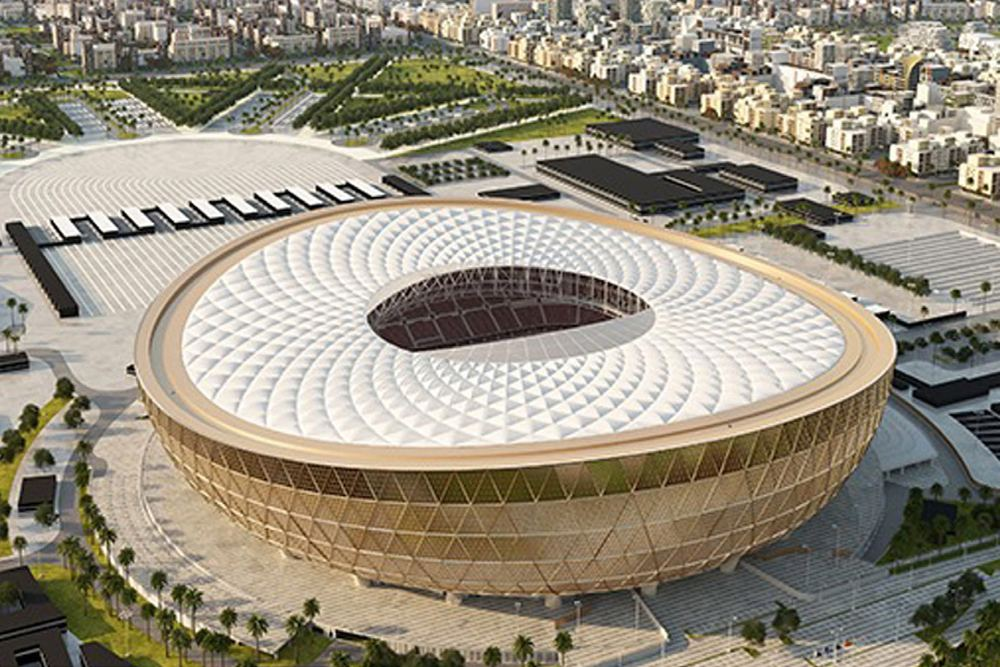
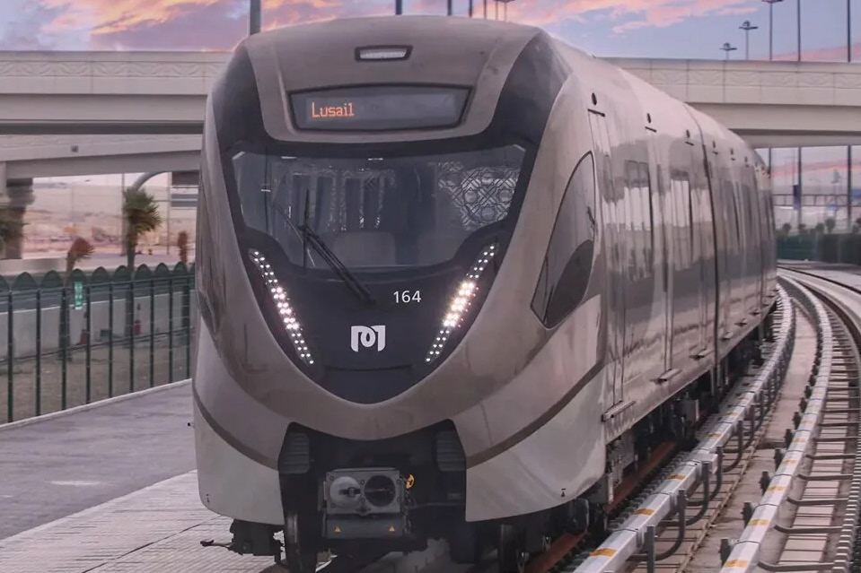

Before designing anything, I researched why Doha should be the city to host the 2036 Olympic Games. The case came down to four pillars. Infrastructure and transportation, sustainability, sports, and culture.
Much of what the Games need already exists. Three metro lines carried 17.4 million journeys during the 2022 World Cup, eight of its stadiums earned sustainability certifications, and Lusail Stadium seats about 89,000 people. Doha has hosted the 2019 World Athletics Championships and the 2022 FIFA World Cup, and its culture of Al Sadu weaving, mashrabiya screens, and Islamic geometric architecture gives it a visual language of its own.
I also faced the arguments against Doha head on. The heat, Western pushback, and human and gender rights. My answers were cooling technology, building international trust, and stronger human and gender protections.

